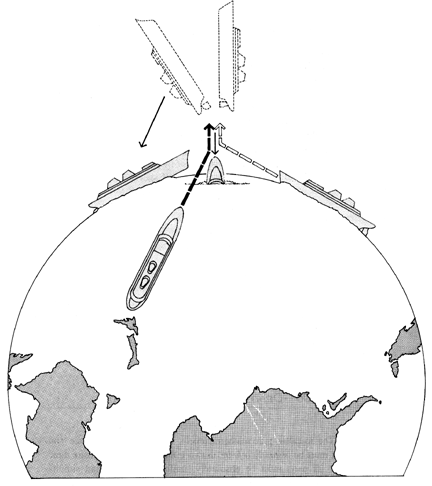

Fig. 521.30 Omnidirectional Lines of Forces: Ships colliding on the globe after sudden acceleration reveal the inadequacy of parallelogram force diagrams for explaining the omnidirectional interaction of forces.
Copyright © 1997 Estate of R. Buckminster Fuller